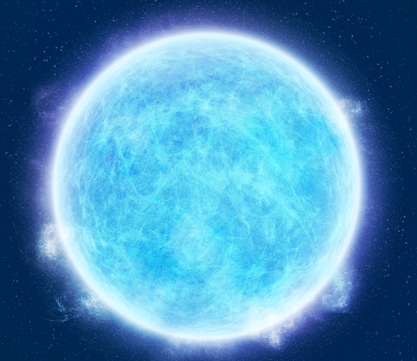

White Dwarf
A white dwarf is what stars like the Sun become after they have exhausted their nuclear fuel. Near the end of its nuclear burning stage, this type of star expels most of its outer material, creating a planetary nebula. Only the hot core of the star remains.If a red giant has insufficient mass to generate the core temperatures, around 1 billion K, required to fuse carbon, an inert mass of carbon and oxygen will build up at its center. After such a star sheds its outer layers and forms a planetary nebula, it will leave behind a core, which is the remnant white dwarf.
